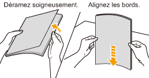

Impression sur transparents
Vérification des transparents utilisables
Cette imprimante peut utiliser des transparents aux formats suivants.
|
Formats standard
|
A4, Lettre
|
Chargement des transparents
Vous pouvez charger des transparents dans le bac multifonctions.
<Précautions à prendre lors du chargement des transparents>
Veillez à bien déramer les transparents et à en aligner les bords avant de les charger, sinon ils risquent d'adhérer les uns aux autres. Si vous ne déramez pas suffisamment la pile, plusieurs feuilles de papier risquent d'être entraînées en même temps, provoquant des bourrages papier.

Lorsque vous déramez ou alignez les transparents, essayez de les tenir par les bords, en évitant de toucher la surface imprimable.
Veillez à ne pas marquer ni tacher la surface imprimable des transparents, que ce soit avec les doigts, de la poussière ou des produits gras. Cela risquerait d'affecter la qualité d'impression.
Impression depuis une application
Après avoir chargé les transparents, lancez l'impression.